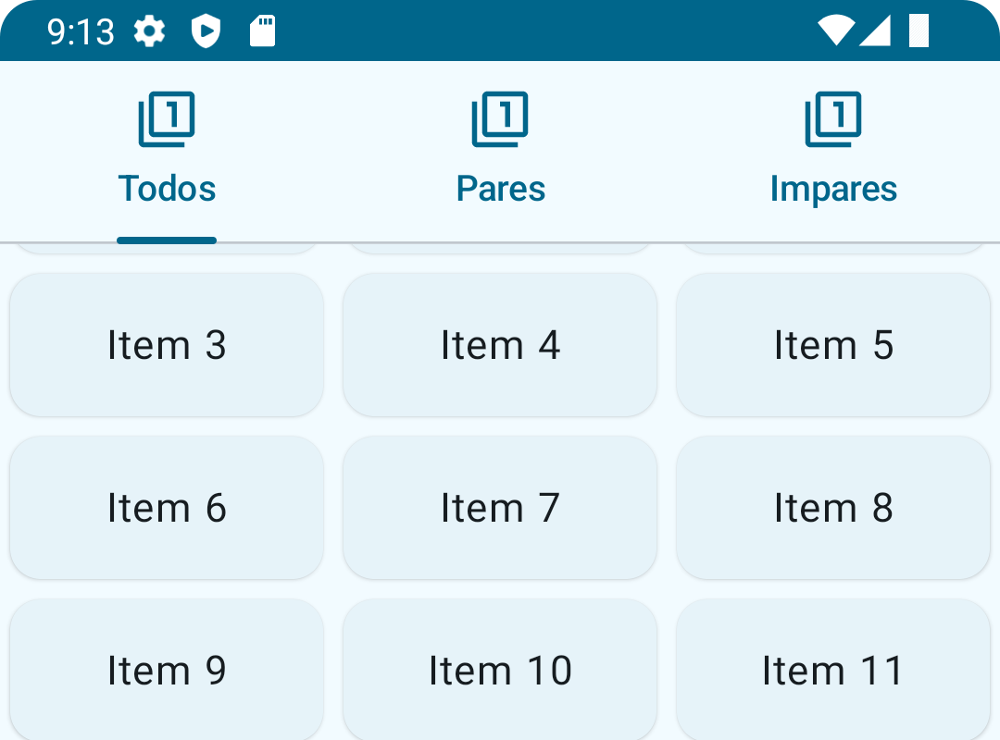
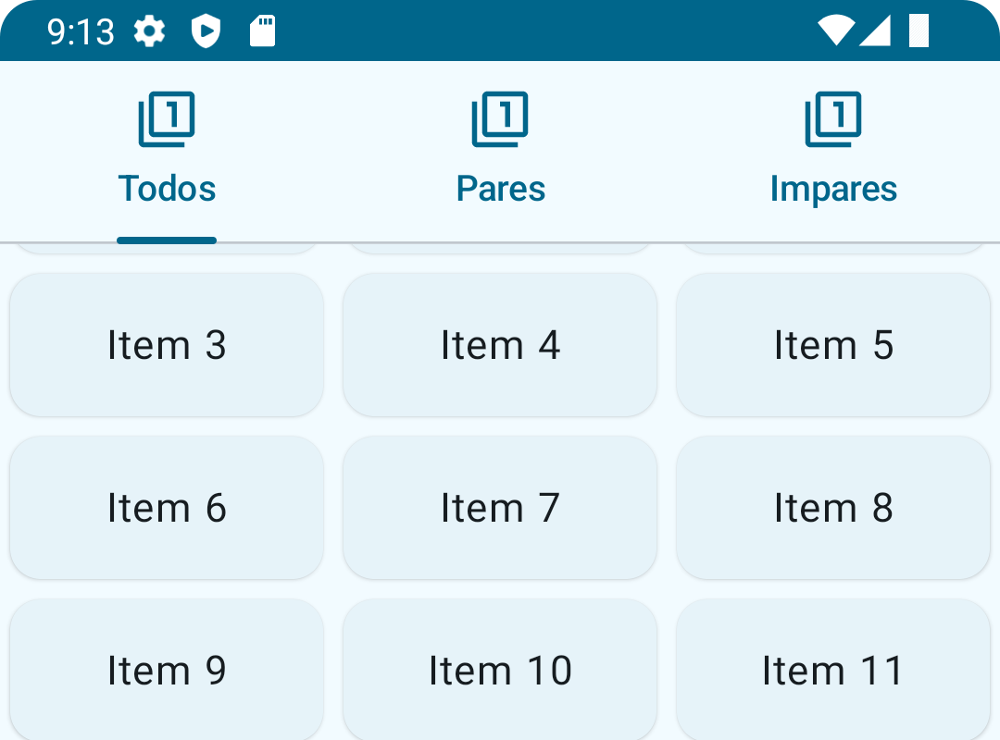

Tema 4.1 - Sacaffold
Descargar estos apuntes pdf o html
Índice
Introducción
Aunque en temas anteriores hemos visto cómo maquetar componentes con los los layouts de la capa 'Foundation', como Surface, Box, Column, Row, etc. en este tema vamos a ver un componente que nos facilita la maquetación de la pantalla, el Scaffold.
Scaffold es un componente de la capa Material y por tanto vendrá definido en la librería de Material 3.
Diseño basado en ranuras
- Documentación oficial: Slot-based layouts
Aunque al final del Tema 3.2 ya se comentó. En este tema se va a profundizar en el concepto de Ranuras o 'Slots'. Es en lo que se basa el diseño de Scaffold y me permite definir componentes de maquetación con Marcos o 'Frames' relacionados y que pueden colaborar entre sí a través de estados.
Veamos un ejemplo definiendo el típico layout de una pantalla con una cabecera, un pié de página, un menú lateral y un contenido central o cuerpo.
En primer lugar definimos un componente que nos permita definir un 'Frame' o marco dentro de una maquetación personalizada. Este componente será un Surface con un borde y un radio de esquina que le dará un aspecto de marco y emitirá un composable contenido en su interior.
@Composable fun ScaffoldFrame( modifier: Modifier = Modifier, contenido: @Composable () -> Unit, ) { Surface( modifier = modifier.then( Modifier .fillMaxSize().padding(2.dp) .border(2.dp, MaterialTheme.colorScheme.inverseSurface) .clip(RoundedCornerShape(10.dp))) ) { contenido() } }
Posteriormente definimos el componente MiScaffold que nos permitirá definir un layout personalizado con una cabecera, un menú, un cuerpo y un pié de página. Siendo cada uno de ellos un ScaffoldFrame que emitirá un contenido que se recibe en el parámetro de tipo @Composable () -> Unit que será lo que denominaremos Ranura o 'Slot'.
@Composable fun MiScaffold( cabecera: @Composable () -> Unit = {}, menu: @Composable () -> Unit = {}, cuerpo: @Composable () -> Unit = {}, pie: @Composable () -> Unit = {} ) { Column( modifier = Modifier.fillMaxSize() ) { ScaffoldFrame(modifier = Modifier.weight(1f)) { cabecera() } Row(modifier = Modifier .weight(10f) .fillMaxSize() ) { ScaffoldFrame(modifier = Modifier.weight(2f)) { menu() } ScaffoldFrame(modifier = Modifier.weight(10f)) { cuerpo() } } ScaffoldFrame(modifier = Modifier.weight(1f)) { pie() } } }
Por último, vamos a definir un preview de nuestro componente MiScaffold para ver cómo se comporta, emitiendo en cada ranura un texto con el nombre de la ranura y un padding.
@Preview(showBackground = true) @Composable fun MiScaffoldPreview() { EjemplosScaffoldTheme { MiScaffold( cabecera = { Text(text = "Cabecera", modifier = Modifier.padding(5.dp)) }, menu = { Text(text = "Menu", modifier = Modifier.padding(5.dp)) }, cuerpo = { Text(text = "Cuerpo", modifier = Modifier.padding(5.dp)) }, pie = { Text(text = "Pie", modifier = Modifier.padding(5.dp)) } ) } }
Info
Puedes descargar el código usado para todos los ejemplo de este tema del siguiente enlace: Proyecto ejemplos ecaffolding
Además, cada ejemplo dispondrá de un enlace de descarga específico al fuente del mismo.
Scaffold
-
Enlaces de interés sobre Scaffold
- Documentación oficial: Scaffold
- Material 3 Jetpack Compose: Sacaffold
- Material 3 Jetpack Compose: BottomSheetSacaffold
- Video Tutorial (Inglés) Philipp Lackner
En Material Design, un 'scaffold' o andamiaje es una estructura fundamental que proporciona una plataforma estandarizada para interfaces de usuario complejas. Mantiene diferentes partes de la IU, como las barras de la app y los botones de acción flotantes, lo que les da a las apps un aspecto coherente.
Este componente proporciona una API para reunir varios componentes materiales para construir su pantalla, asegurando una estrategia de diseño adecuada para ellos y recopilando los datos necesarios para que estos componentes funcionen juntos correctamente. Por ejemplo, si aparece un mensaje en un Snackbar, Scaffold se asegura de que el mensaje se muestre correctamente en la pantalla desplazando otros componentes como podría ser un botón flotante.
Estos componentes que se pueden añadir al Scaffold también definidos en Material 3 son:
- Barras de aplicación:
- Superiores
TopAppBar,CenterAlignedTopAppBar,MediumTopAppBaroLargeTopAppBar - Inferiores como
BottomAppBaroNavigationBar
- Superiores
- Barras de mensaje o estado (
SnackBar) - Botones flotantes de acción (
Fab) - Layouts desplegables inferiores no modales (
BottomSheets)
Puesto que todo está definido en el sistema de diseño de Material, los componentes se combinan de forma coherente y se comportan de forma predecible y siguen las directrices de 'layout' descritas en Material, en nuestro caso para pantallas compactas.
En el prototipo de de la función composable Scaffold podemos apreciar las diferentes ranuras o 'slots' que nos permite definir:
@Composable fun Scaffold( modifier: Modifier = Modifier, topBar: @Composable () -> Unit = {}, bottomBar: @Composable () -> Unit = {}, snackbarHost: @Composable () -> Unit = {}, floatingActionButton: @Composable () -> Unit = {}, floatingActionButtonPosition: FabPosition = FabPosition.End, containerColor: Color = MaterialTheme.colorScheme.background, contentColor: Color = contentColorFor(containerColor), contentWindowInsets: WindowInsets = ScaffoldDefaults.contentWindowInsets, content: @Composable (PaddingValues) -> Unit )
Disponemos de otra función de prototipo BottomSheetScaffold que nos permite definir un layout con un contenido principal y un contenido secundario que se muestra en una hoja inferior desplegable no modal. Del protipo de la función composable BottomSheetScaffold deducir las diferentes ranuras o 'slots' que nos permite definir que este tipo de Scaffold no es compatible con barras inferiores como BottomAppBar o NavigationBar, ni con botones flotantes de acción (Fab).
@Composable fun BottomSheetScaffold( sheetContent: @Composable ColumnScope.() -> Unit, modifier: Modifier = Modifier, scaffoldState: BottomSheetScaffoldState = rememberBottomSheetScaffoldState(), sheetPeekHeight: Dp = BottomSheetDefaults.SheetPeekHeight, sheetMaxWidth: Dp = BottomSheetDefaults.SheetMaxWidth, sheetShape: Shape = BottomSheetDefaults.ExpandedShape, sheetContainerColor: Color = BottomSheetDefaults.ContainerColor, sheetContentColor: Color = contentColorFor(sheetContainerColor), sheetTonalElevation: Dp = BottomSheetDefaults.Elevation, sheetShadowElevation: Dp = BottomSheetDefaults.Elevation, sheetDragHandle: (@Composable () -> Unit)? = { BottomSheetDefaults.DragHandle() }, sheetSwipeEnabled: Boolean = true, topBar: (@Composable () -> Unit)? = null, snackbarHost: @Composable (SnackbarHostState) -> Unit = { SnackbarHost(it) }, containerColor: Color = MaterialTheme.colorScheme.surface, contentColor: Color = contentColorFor(containerColor), content: @Composable (PaddingValues) -> Unit ): Unit
Barras superiores
Cómo su nombre indica pueden ir situadas en la parte superior de la pantalla.
Barras de aplicación superiores (TopAppBars)
-
Enlaces de interés de Barras de aplicación superiores
- Material 3 Jetpack Compose: TopAppBar
- Material 3 Jetpack Compose: BottomAppBar
- Material 3 Jetpack Compose: CenterAlignedTopAppBar
- Material 3 Jetpack Compose: MediumTopAppBar
- Material 3 Jetpack Compose: LargeTopAppBar
- Video Tutorial (Inglés) Stevdza-San
- Video Tutorial (Inglés) Philipp Lackner
Especificaciones de uso en el sistema de diseño de Material 3:
-
Contiene un título y acciones relacionadas con la pantalla actual. Por ejemplo, puede contener un botón de navegación para volver a la pantalla anterior, un menú desplegable para mostrar acciones adicionales y acciones para realizar tareas relacionadas con la pantalla actual.
-
Al desplazarse, aplica un color de relleno del contenedor para separar la barra de la aplicación del contenido del cuerpo, deben tener el mismo ancho que la ventana del dispositivo y no deben superponerse con el contenido del cuerpo.
-
Tendremos cuatro tipos: regular (o pequeño), alineado al centro, mediano y grande. Aunque en dispositivos Compactos solo se recomienda el uso de los dos primeros
TopAppBaryCenterAlignedTopAppBar.
Vamos a un ejemplo de uso de TopAppBar en el cual le pasamos un parámetro de tipo TopAppBarScrollBehavior donde le definimos como se tiene que comportar ante un scroll en el contenido principal en el Scaffold.
En nuestro caso será de tipo ...
val comportamientoAnteScroll = TopAppBarDefaults.pinnedScrollBehavior()
que hará que se quede 'pinneada' (fija) en la parte superior de la pantalla cuando se haga scroll, pero de acuerdo al sistema de Material cambie ligeramente su color de fondo indicando si tenemos scroll o no.
Otros valores pueden ser: enterAlwaysScrollBehavior() y exitUntilCollapsedScrollBehavior()
Fíjate que nos ofrece Ranuras o 'Slots' para definir el título, el icono de navegación y las acciones.
@OptIn(ExperimentalMaterial3Api::class) @Composable fun BarraAplicacion( comportamientoAnteScroll: TopAppBarScrollBehavior ) = TopAppBar( title = { // El texto en TopAppBar solo puede tener una línea Text("Título de una línea", maxLines = 1, overflow = TextOverflow.Ellipsis) }, navigationIcon = { IconButton(onClick = { }) { Icon(imageVector = Icons.Filled.Menu, contentDescription = null) } }, actions = { IconButton(onClick = { }) { Icon(imageVector = Icons.Filled.FirstPage, contentDescription = null) } IconButton(onClick = { }) { Icon(imageVector = Icons.Filled.Refresh, contentDescription = null) } }, scrollBehavior = comportamientoAnteScroll )
El contenido del Scaffold será un LazyColumn que nos permitirá hacer scroll.
✋ Importante: Fíjate que
ContenidoPrincipalScaffoldrecibe un modificador, esto es porque el lambda que emite el contenido del Scaffold recibe un parámetro de tipoPaddingValuesque ajustará este contenido respecto al resto de componentes del mismo.
@Composable fun ContenidoPrincipalScaffold( modifier: Modifier = Modifier ) { val colors = remember { listOf(Color(0xFF50A2E4), Color(0xFFFFFFFF)) } LazyColumn(modifier = modifier) { items(count = 25) { Box( Modifier .fillMaxWidth().background(colors[it % colors.size]) ) { Text(text = "Item $it", modifier = Modifier.padding(16.dp)) } } } }
La variable comportamientoAnteScroll que pasamos a la BarraAplicacion la tenemos que pasar el Scaffold como modificador que indique que debe propagar el evento de scroll través de ella a los elementos suscritos a ella.
@OptIn(ExperimentalMaterial3Api::class) @Composable fun PantallaConScroll() { val comportamientoAnteScroll = TopAppBarDefaults.pinnedScrollBehavior() Scaffold( modifier = Modifier.nestedScroll(comportamientoAnteScroll.nestedScrollConnection), // Ranura que emite la barra de aplicación topBar = { BarraAplicacion(comportamientoAnteScroll) }, // Ranura que emite el contenido principal qeu recibe el padding content = { innerPadding -> ContenidoPrincipalScaffold(modifier = Modifier.padding(innerPadding)) } ) }
Si ejecutamos PantallaConScroll en nuestro dispositivo virtual, veremos que la barra de aplicación se queda fija en la parte superior de la pantalla cuando hacemos scroll y además se oscurece ligeramente el color en el scroll.
⚠️ Aviso: Este comportamiento de escurecimiento no se aprecia en la previsualización de Android Studio pero sí en el dispositivo virtual.
Barras de pestañas (TabRow)
-
Enlaces de interés sobre Barras pestañas
-
Material 3 Jetpack Compose: Tab
-
Material 3 Jetpack Compose: PrimaryTabRow
-
Material 3 Jetpack Compose: SecondaryTabRow
-
Video Tutorial (Inglés) Stevdza-San
-
Video Tutorial (Inglés) Philipp Lackner
-
Especificaciones de uso en el sistema de diseño de Material 3:
-
Son útiles para agrupar contenido en categorías.
-
Pueden desplazarse horizontalmente con scroll.
-
También pueden utilizarse para navegar entre pantallas horizontales en dispositivos compactos usando por ejemplo un
HorizontalPagery deslizando con el dedo (Swipe). En este caso no se recomienda Scroll y por tanto tendremos más de 3 o 4 pestañas. -
Se recomienda usar
LazyGriden el caso de mostrar algún tipo de colección. -
Si el contenedor principal es scrollable, las pestañas quedarán fijas y no se ocultarán verticalmente con el contenido.
Tipos de pestañas:
-
Pestañas primarias: Con
PrimaryTabRowyPrimaryScrollableTabRow- En estas pestañas tendremos un icono y un texto.
- Estás están situadas en la parte superior de la pantalla, justo debajo de la barra de aplicación.
- Pueden tener un componente
Badgevisto en temas anteriores de forma opcional.
-
Pestañas secundarias: Con
SecondaryTabRowySecondaryScrollableTabRow- En estas pestañas tendremos solo un texto.
- Pueden estar situadas en contenido intermedio de la pantalla, separando contenido relacionado de forma jerárquica.
Veamos un ejemplo de uso de PrimaryTabRow bajo un TopAppBar.
Aviso
Para usar las PrimaryTabRow, SecondaryTabRow, etc. debemos añadir la dependencia mínima de la versión de material3 en el build.gradle.kts del módulo.
implementation("androidx.compose.material3:material3-android:1.2.0-beta01")
Definimos un componente con nuestras pestañas. Fíjate que necesitamos un estado con un índice que nos indique la pestaña seleccionada. Esto va ha hacer muy sencillo su uso con HorizontalPager.
@OptIn(ExperimentalMaterial3Api::class) @Composable fun Tabs() { var tabIndexState by remember { mutableStateOf(0) } val titlesAndIcons = remember { listOf( "Todos" to Icons.Filled.Filter1, "Pares" to Icons.Filled.Filter1, "Impares" to Icons.Filled.Filter1 ) } PrimaryTabRow(selectedTabIndex = tabIndexState) { titlesAndIcons.forEachIndexed { index, (title, icon) -> Tab( selected = tabIndexState == index, onClick = { tabIndexState = index }, text = { Text( text = title, maxLines = 2, overflow = TextOverflow.Ellipsis) }, icon = { Icon(icon, contentDescription = null) } ) } } }
Como sucedía antes, es importante que apliquemos un padding al contenedor principal del Scaffold para que no se solape con las pestañas. Puedes verlo en el siguiente código...
@Composable fun ContenidoTabs(modifier: Modifier = Modifier) { Column(modifier = modifier) { Tabs() LazyVerticalGrid(columns = GridCells.Adaptive(100.dp)) { items(count = 50) { ElevatedCard( modifier = Modifier.widthIn(100.dp).padding(4.dp), ) { Text( text = "Item $it", modifier = Modifier.padding(16.dp).fillMaxWidth(), textAlign = TextAlign.Center ) } } } } }
También hemos aplicado un nuevo comportamiento de scroll a la barra de aplicación, en este caso enterAlwaysScrollBehavior() que hará que la barra de aplicación se oculte cuando hacemos scroll hacia abajo y se muestre cuando volvemos con el scroll al primer elemento.
@OptIn(ExperimentalMaterial3Api::class) @Composable fun PantallaConTabs() { val comportamientoAnteScroll = TopAppBarDefaults.exitUntilCollapsedScrollBehavior() Scaffold( modifier = Modifier.nestedScroll(comportamientoAnteScroll.nestedScrollConnection), topBar = { BarraAplicacionTabs(comportamientoAnteScroll) }, content = { innerPadding -> ContenidoTabs(modifier = Modifier.padding(innerPadding)) } ) }
 

Barras inferiores
Son barras cuyo uso puede llevar a confusión ya que están situadas en la misma posición. Por esta razón, vamos a tratar de extraer unas pautas de uso de la documentación oficial de Material 3.
Barra de navegación o NavigationBar
-
Enlaces de interés de NavigationBar
-
Material 3 Jetpack Compose: NavigationBar
-
Material 3 Jetpack Compose: NavigationBarItem
-
Video Tutorial (Inglés) Stevdza-San
-
Video Tutorial (Inglés) Philipp Lackner
-
Especificaciones de uso en el sistema de diseño de Material 3:
-
Las barras de navegación ofrecen una forma persistente y correcta de cambiar entre destinos primarios en una app con layout compacto. Con persistente nos referimos a que siempre están visibles y además no cambian a lo largo de la ejecución.
-
Solo deben contener de tres a cinco elementos de navegación, cada uno de ellos representando un destino singular en la misma jerarquía y sin ningún tipo de Scroll.
-
Las posicionaremos en la ranura o 'slot'
bottomBardelScaffold. -
Aunque se pueden representar solo con un icono, se recomienda que tengan un texto corto que describa el destino. Además, opcionalmente también pueden representar un Badge.
-
Aunque, como sucede con TabRow, tenemos un índice que nos indica el elemento seleccionado. No debemos deslizar ('Swipe') y por tanto, no podemos usar
HorizontalPagerpara navegar entre los elementos de la barra de navegación.
Veamos un ejemplo sencillo de cómo implementar este componente.
📌 Nota: Más adelante veremos como gestionar la navegación de forma más adecuada con el sistema de navegación de Jetpack Compose.
Puesto que no vamos a implementar una navegación como tal, vamos ha hacer que el componente que muestra el contenido principal del Scaffold reciba un índice que nos indique el elemento seleccionado de la barra de navegación, cambiando su contenido en función del mismo.
@Composable fun ContenidoPrincipalNavBar( indexScreenState: Int, modifier: Modifier = Modifier ) { val backgroundColor = when (indexScreenState) { 0 -> MaterialTheme.colorScheme.primaryContainer 1 -> MaterialTheme.colorScheme.secondaryContainer else -> MaterialTheme.colorScheme.tertiaryContainer } Box( modifier = modifier.then( Modifier .fillMaxSize() .background(color = backgroundColor) ), contentAlignment = Alignment.BottomCenter ) { Text( modifier = Modifier.padding(bottom = 32.dp), text = "Pantalla ${indexScreenState + 1}", textAlign = TextAlign.Center, style = MaterialTheme.typography.headlineLarge ) } }
La barra de navegación, al igual que deberíamos haber hecho con TabRow, recibirá el índice del elemento seleccionado y un callback que nos permitirá cambiar el índice cuando se pulse sobre un elemento de la barra de navegación.
@Composable fun NavBar( indexScreenState: Int, onNavigateToScreen: (Int) -> Unit ) { val titlesAndIcons = remember { listOf( "Pantalla 1" to Icons.Filled.Filter1, "Pantalla 2" to Icons.Filled.Filter2, "Pantalla 3" to Icons.Filled.Filter3 ) } NavigationBar { titlesAndIcons.forEachIndexed { index, (title, icon) -> NavigationBarItem( icon = { Icon(icon, contentDescription = title) }, label = { Text(title) }, selected = indexScreenState == index, onClick = { onNavigateToScreen(index) } ) } } }
Por último, al componer nuestro Scaffold. En la ranura o 'slot' bottomBar emitiremos nuestro componente NavBar.
@OptIn(ExperimentalMaterial3Api::class) @Composable fun PantallaNavBar() { var indexScreenState by remember { mutableStateOf(0) } val comportamientoAnteScroll = TopAppBarDefaults.pinnedScrollBehavior() Scaffold( modifier = Modifier.nestedScroll(comportamientoAnteScroll.nestedScrollConnection), topBar = { BarraAplicacionNavBar(comportamientoAnteScroll) }, bottomBar = { NavBar( indexScreenState = indexScreenState, onNavigateToScreen = { indexScreenState = it } ) }, content = { innerPadding -> ContenidoPrincipalNavBar( indexScreenState = indexScreenState, modifier = Modifier.padding(innerPadding) ) } ) }
Como puedes ver en las imágenes de abajo donde se muestra un ejemplo de ejecución, el elemento de la navegación seleccionado se muestra resaltado respecto al resto.
Barra de aplicación inferior o BottomAppBar
-
Enlaces de interés de BottomAppBar
-
Material 3 Jetpack Compose: BottomAppBar
-
Video Tutorial (Inglés) Philipp Lackner
-
Si nos vamos a la documentación oficial de la implementación del sistema de diseño de Material 3 para Jetpack Compose, veremos que hay diferentes sobrecargas de la función composable BottomAppBar, resultado de la evolución de este componente en el sistema. Nosotros vamos a centrarnos en este interfaz que es el que más se ajusta a las especificaciones de Material Design.
@ExperimentalMaterial3Api @Composable fun BottomAppBar( actions: @Composable RowScope.() -> Unit, modifier: Modifier = Modifier, floatingActionButton: (@Composable () -> Unit)? = null, containerColor: Color = BottomAppBarDefaults.containerColor, contentColor: Color = contentColorFor(containerColor), tonalElevation: Dp = BottomAppBarDefaults.ContainerElevation, contentPadding: PaddingValues = BottomAppBarDefaults.ContentPadding, windowInsets: WindowInsets = BottomAppBarDefaults.windowInsets, scrollBehavior: BottomAppBarScrollBehavior? = null ): Unit
En él podemos ver que tenemos una ranura o 'slot' para definir las acciones, otra para definir un botón flotante de acción y otra para definir el comportamiento ante el scroll en el contenedor principal del Scaffold huésped.
Fíjate que en otros prototipos de la función composable BottomAppBar como la siguiente, no tenemos ranura para definir el comportamiento ante el scroll y solo tenemos una ranura o 'slot' para definir el contenido en un RowScope del componente.
@Composable fun BottomAppBar( modifier: Modifier = Modifier, containerColor: Color = BottomAppBarDefaults.containerColor, contentColor: Color = contentColorFor(containerColor), tonalElevation: Dp = BottomAppBarDefaults.ContainerElevation, contentPadding: PaddingValues = BottomAppBarDefaults.ContentPadding, windowInsets: WindowInsets = BottomAppBarDefaults.windowInsets, content: @Composable RowScope.() -> Unit ): Unit
Especificaciones de uso en el sistema de diseño de Material 3:
- Mostrar acciones para la pantalla actual. Algo similar a lo que hacíamos con la
TopAppBar, pero aquí tenemos más espacio y podríamos mostrar de dos hasta cinco acciones sin dejar algunas de ellas de forma implícita en un menú desplegable de desbordamiento (overflow menu) y siendo más accesibles para el usuario con el pulgar. - Podemos mostrar un botón flotante de acción FAB que nos permita realizar una acción de especial relevancia para la pantalla actual. Obviamente si definimos dicho FAB en la ranura o 'slot'
floatingActionButtonno tiene sentido definirlo en la ranura o 'slot'bottomBardelScaffold. - Material permite que alguna de estas acciones desencadenen la navegación a alguna otra pantalla.
- Esta permitido un menú desplegable de desbordamiento com más acciones al principio.
- Si se muestra un SnackBar, este se mostrará por encima de la barra de aplicación inferior y nunca la ocultará o se mostrará contenido en la misma debajo.
- Pueden desaparecer al hacer scroll hacia arriba y aparecer al hacer scroll hacia abajo.
- Están permitidas transiciones entre acciones y FAB según el elemento seleccionado en la pantalla.
Veamos un ejemplo sencillo de cómo usar este componente siguiendo las especificaciones de Material Design. En él, vamos a implementar un Scaffold sencillo con una barra de aplicación inferior que tendrá un FAB y unas acciones. Además, el contenido principal del Scaffold será un LazyColumn con una lista de items que nos permitirá hacer scroll y cuando seleccionemos un elemento las acciones y el FAB serán referentes al elemento seleccionado y cuando no lo estén serán otros generales a la lista de items. Por último, vamos a definir un comportamiento ante el scroll que hará que la barra de aplicación inferior se oculte cuando hacemos scroll hacia arriba junto con la barra de aplicación superior.
En las siguientes imágenes puedes ver un ejemplo del funcionamiento descrito anteriormente.
El contenedor principal, permitirá seleccionar y deseleccionar un elemento de la lista de items. Para ello, recibirá un estado que nos indique el elemento seleccionado y un callback que nos permitirá cambiar el estado cuando se pulse sobre un elemento de la lista.
@Composable fun ContenidoPrincipalScaffoldConBarraAppInferior( itemSeleccionadoState: Int?, onSeleccionarItem: (Int) -> Unit, modifier: Modifier = Modifier ) { LazyColumn(modifier = modifier) { items(count = 25) { Surface( color = if (itemSeleccionadoState == it) { MaterialTheme.colorScheme.secondary } else { MaterialTheme.colorScheme.secondaryContainer }, modifier = Modifier .fillMaxWidth() .clickable { onSeleccionarItem(it) } .border( width = 1.dp, color = MaterialTheme.colorScheme.onSurface.copy(alpha = 0.12f) ) ) { Text( text = "Item $it", modifier = Modifier.padding(16.dp), fontWeight = if (itemSeleccionadoState == it) { FontWeight.ExtraBold } else { FontWeight.Normal } ) } } } }
El componente que muestra el Scaffold gestionará el estado del elemento seleccionado (recuerda que esto debería 'ascender' algún tipo de ViewModel) así como pasará al scaffold los observers que notificarán el scroll. Por último, fíjate en la líneas resaltadas que dependiendo de si hay un elemento seleccionado o no se emitirá un BottomAppBar u otro.
@OptIn(ExperimentalMaterial3Api::class) @Composable fun PantallaConScrollConBarraAppInferior() { val comportamientoAnteScrollSup = TopAppBarDefaults.exitUntilCollapsedScrollBehavior() val comportamientoAnteScrollInf = BottomAppBarDefaults.exitAlwaysScrollBehavior() var itemSeleccionadoState: Int? by remember { mutableStateOf(null) } val onSeleccionarItem: (Int) -> Unit = { itemSeleccionadoState = if (itemSeleccionadoState != it) it else null } Scaffold( modifier = Modifier .nestedScroll(comportamientoAnteScrollInf.nestedScrollConnection) .nestedScroll(comportamientoAnteScrollSup.nestedScrollConnection), topBar = { BarraAppSuperiorConBarraAppInferior(comportamientoAnteScrollSup) }, bottomBar = { if (itemSeleccionadoState == null) BarraAppInferiorSinSeleccion(comportamientoAnteScrollInf) else BarraAppInferiorSeleccion(comportamientoAnteScrollInf) }, content = { innerPadding -> ContenidoPrincipalScaffoldConBarraAppInferior( itemSeleccionadoState = itemSeleccionadoState, onSeleccionarItem = onSeleccionarItem, modifier = Modifier.padding(innerPadding) ) } ) }
Por último, vamos a ver cómo sería el composable que emite la barra de aplicación inferior cuando no hay ningún elemento seleccionado. La otra barra de aplicación inferior sería muy similar, pero con un FAB y unas acciones diferentes.
@OptIn(ExperimentalMaterial3Api::class) @Composable fun BarraAppInferiorSeleccion( comportamientoAnteScroll: BottomAppBarScrollBehavior = BottomAppBarDefaults.exitAlwaysScrollBehavior() ) { val descripcionEIconos = remember { listOf( "Eliminar Item" to Icons.Filled.Delete, "Completar Item" to Icons.Filled.Favorite, "Descargar Item" to Icons.Filled.Download, "Editar Item" to Icons.Filled.Share, ) } BottomAppBar( actions = { descripcionEIconos.forEach { (descripcion, icono) -> IconButton( onClick = { /* do something */ }) { Icon( imageVector = icono, tint = MaterialTheme.colorScheme.secondary, contentDescription = descripcion ) } } }, floatingActionButton = { FloatingActionButton( onClick = { /* do something */ }, containerColor = BottomAppBarDefaults.bottomAppBarFabColor, contentColor = MaterialTheme.colorScheme.primary, elevation = FloatingActionButtonDefaults.bottomAppBarFabElevation() ) { Icon(Icons.Filled.Edit, "Localized description") } }, scrollBehavior = comportamientoAnteScroll ) }
Menús desplegables
-
Enlaces de interés de Menús desplegables
-
Material 3 Jetpack Compose: DropdownMenu
-
Material 3 Jetpack Compose: DropdownMenuItem
-
Video Tutorial (Castellano) Gibrán García
-
Video Tutorial (Inglés) Philipp Lackner
-
Es un elemento tradicional de las interfaces de usuario que nos permite mostrar un menú de acciones/opciones desplegable.
Especificaciones de uso en el sistema de diseño de Material 3:
-
Se pueden dar en diferentes contextos, pero los principales son:
- En la TopAppbar: En este caso, el menú desplegable se mostrará en la parte inferior de la barra de aplicación y se desplegará hacia abajo. Normalmente, se mostrará un menú desplegable de desbordamiento con acciones que no caben en la barra de aplicación simbolizado por tres puntos verticales.
- De forma contextual: Realizaremos un tap largo sobre un elemento de la interfaz de usuario y se mostrará un menú desplegable con acciones relacionadas con el elemento seleccionado.
- El tradicional
TextFieldDesplegable: Implementado con el componente ExposedDropdownMenuBox en el sistema de Material 3. Me permitirá seleccionar un elemento de una lista de elementos dentro de un campo de texto con un menú desplegable. - En chips de filtrado: Donde se ofrecerá una serie de opciones de filtrado simple.
-
Pueden tener, de forma opcional, una línea de separación entre grupos de elementos usando HorizontalDivider
-
Pueden contener submenús desplegables, pero en dispositivos compactos no se recomienda usarlos.
Veamos un ejemplo análogo al que hemos visto en la barra de aplicación inferior pero en este caso con un menú desplegable de desbordamiento en la barra de aplicación superior.
Como antes, vamos a tener la posibilidad de seleccionar un item dentro de una lista, si está seleccionado las acciones y por tanto el menú de desbordamiento serán unas y si no lo está, serán otras. Tal y como se muestra en el siguiente ejemplo de ejecución.
En primer lugar, para no repetir mucho código vamos a definir un componente reutilizable que nos permita mostrar un menú desplegable de desbordamiento en la barra de aplicación superior, de tal manera que la primera acción se muestre directamente en la barra y el resto de forma elíptica a través del menú desplegable.
En primer lugar, por ejemplo, podemos definir una clase de datos que nos permita definir un item del menú desplegable de desbordamiento, incluyendo un callback que se ejecutará cuando se pulse sobre el item.
// Indica a Compose sus objetos son inmutable // y por tanto puede optimizar su renderizado @Immutable data class ItemMenuDesplegable( val icono: ImageVector, val descripcion: String, val onClick: () -> Unit )
Ahora definiremos un componente AccionesConMenuDesplegable que recibe una lista de ItemMenuDesplegable que como precondición debe tener al menos 3 elementos. Esto es, si no hay 3 elementos o más, se lanzará una excepción ya que el menú de desbordamiento no tendría sentido. Ya que, el primer elemento será el que se muestre en la barra de aplicación y el resto se mostrarán en el menú desplegable de desbordamiento (al menos 2).
@Composable fun AccionesConMenuDesplegable( itemsMenu : List<ItemMenuDesplegable> ) { if (itemsMenu.count() < 3) // Precondición de uso throw IllegalArgumentException("Se requieren al menos 3 items en el menú desplegable") var expandidoState by remember { mutableStateOf(false) } val cerrarMenu: () -> Unit = { expandidoState = false } IconButton(onClick = itemsMenu[0].onClick) { Icon( imageVector = itemsMenu[0].icono, contentDescription = itemsMenu[0].descripcion ) } IconButton(onClick = { expandidoState = true }) { Icon(imageVector = Icons.Filled.MoreVert, contentDescription = null) } DropdownMenu( expanded = expandidoState, onDismissRequest = cerrarMenu ) { for (i in 1..<itemsMenu.count()) { DropdownMenuItem( text = { Text(itemsMenu[i].descripcion) }, onClick = { itemsMenu[i].onClick cerrarMenu() }, leadingIcon = { Icon( imageVector = itemsMenu[i].icono, contentDescription = itemsMenu[i].descripcion ) }) } } }
Fíjate que a través de un estado expandidoState controlamos si el menú desplegable está expandido o no. Además, tenemos un callback cerrarMenu que nos permitirá cerrar el menú desplegable cuando se pulse sobre un item del mismo o se pulse fuera del menú desplegable desechándolo.
Ya podemos usar nuestro componente AccionesConMenuDesplegable en el Scaffold. Para ello definiremos, dos listas de ItemMenuDesplegable. Una para cuando no hay ningún elemento seleccionado y otra para cuando hay un elemento seleccionado. Por ejemplo...
@Composable fun AccionesConMenuDesplegableSinSeleccion() { val descripcionEIconos = remember { listOf( ItemMenuDesplegable( icono = Icons.Filled.Search, descripcion = "Buscar Item", onClick = { } ), ItemMenuDesplegable( icono = Icons.Filled.Filter, descripcion = "Filtrar Item", onClick = { } ), ItemMenuDesplegable( icono = Icons.Filled.SortByAlpha, descripcion = "Ordenar Item", onClick = { } ) ) } return AccionesConMenuDesplegable(itemsMenu = descripcionEIconos) } @Composable fun AccionesConMenuDesplegableSeleccion() { ...}
Por último, dependiendo de si tenemos un elemento seleccionado o no, emitiremos un menú desplegable u otro.
@OptIn(ExperimentalMaterial3Api::class) @Composable fun BarraAplicacionConDropDownMenu( itemSeleccionadoState: Boolean, comportamientoAnteScroll: TopAppBarScrollBehavior ) = TopAppBar( title = { Text("Ejemplo DropDown", maxLines = 1, overflow = TextOverflow.Ellipsis) }, navigationIcon = { IconButton(onClick = { }) { Icon(imageVector = Icons.Filled.ArrowBackIosNew, contentDescription = null) } }, actions = { if (itemSeleccionadoState) AccionesConMenuDesplegableSeleccion() else AccionesConMenuDesplegableSinSeleccion() }, scrollBehavior = comportamientoAnteScroll )
Snackbars
-
Enlaces de interés de Snackbars
- Material 3 Jetpack Compose: SnackBarHost
- Material 3 Jetpack Compose: SnackBar
Las Snackbars proporcionan mensajes breves sobre los procesos de la aplicación en la parte inferior de la pantalla. Esto es, informan a los usuarios de un proceso que una aplicación ha realizado o realizará.
Especificaciones de uso en el sistema de diseño de Material 3:
- Suelen aparecer temporalmente no interrumpiendo la experiencia del usuario. Por tanto no requerirán de la acción del usuario para desaparecer.
- La diferencia con un diálogo es que los mensajes son de baja prioridad y como hemos comentado no requieren de la verificación del usuario.
- Ocasionalmente pueden contener una sola acción. En este caso no deben autodesaparecer hasta que el usuario realice otra acción.
- No deben aparecer más de una Snackbar a la vez.
- No deben contener más de dos líneas de texto en un display compacto.
- No deben contener iconos, ni enlaces.
- Si tenemos una acción en la Snackbar, esta debe ser una acción de alto nivel. La acción debe ser una acción que permita al usuario resolver el mensaje y debería ir en la parte derecha de la Snackbar con un color diferente al del texto de la Snackbar. Por ejemplo, ante un error podemos mostrar acciones como 'Reintentar' o 'Descartar'.
Aunque es posible emitir un SnackBar con un estado en cualquier jerarquía de compose al igual que hacíamos con un AlertDialog, lo más habitual es que se emita gestionado dentro de un Scaffold. El Scaffold proporciona un SnackbarHost que nos permite emitir un SnackBar con un estado y se encarga de gestionar su ciclo de vida y la visibilidad respecto a otros componentes gestionados por el Scaffold por ejemplo:
- Apareciendo sobre la barra de aplicación inferior y no ocultándola.
- Si tenemos un FAB la Snackbar debe aparecer sobre el FAB y no debe ocultarlo o mostrarse debajo del mismo.
El uso de SnackbarHost no es inmediato pues tiene múltiples casuísticas y personalizaciones que se pueden encontrar en la documentación oficial, justo debajo del epígrafe de este apartado.
Nosotros vamos a tratar un ejemplo sencillo de cómo usar este componente en los casos más comunes. Para ello vamos a partir de un Scaffold sencillo con una TopAppBar, un FAB y un SnackBarHost. El contenido principal mostrará una lista de items como en otros ejemplos y la hacer click sobre uno nos mostrará un SnackBar temporal con un mensaje que nos indicará el item seleccionado. El FAB nos permitirá mostrar un SnackBar de duración indefinida con un icono de cancelación tal y como se muestra en las siguientes imágenes...
Vamos a ver por partes, el composable que define este Scaffold y que denominaremos PantallaConScaffoldYConSnackBar.
Primero podemos considerar la definición de un estado para nuestro SnackBarHost a través de la clase SnackbarHostState. Este estado nos permitirá emitir un SnackBar a través de la función showSnackbar y nos permitirá gestionar el ciclo de vida del mismo a través de la función currentSnackbarData.
@OptIn(ExperimentalMaterial3Api::class) @Composable fun PantallaConScaffoldYConSnackBar() { val comportamientoAnteScrollSup = TopAppBarDefaults.exitUntilCollapsedScrollBehavior() val snackbarHostState = remember { SnackbarHostState() } val scope = rememberCoroutineScope() var itemSeleccionadoState: Int? by remember { mutableStateOf(null) } val onSeleccionarItem: (Int) -> Unit = { itemSeleccionadoState = if (itemSeleccionadoState != it) it else null scope.launch { if (itemSeleccionadoState != null) { snackbarHostState.currentSnackbarData?.dismiss() snackbarHostState.showSnackbar( message = "Item $itemSeleccionadoState seleccionado", ) } } }
Fíjate que al seleccionar un item mostramos el SnackBar con snackbarHostState.showSnackbar que permitirá mostrarlo con diferentes configuraciones simples.
✋ Importante: Si antes de mostrar un
SnackBarno llamásemos asnackbarHostState.currentSnackbarData?.dismiss()y hubiese unSnackBarmostrándose, este no se mostraría hasta que el anterior expirase. Con la anterior llamada pues, podemos forzar la expiración delSnackBaranterior y mostrar el nuevo.
A continuación emitiremos el Scaffold donde definimos un SnackbarHost(snackbarHostState) por defecto, que será el encargado de gestionar el ciclo de vida de los SnackBar que emitamos.
La gestión a la hora de mostarlo al pulsa el FAB es similar a la anterior, pero en este caso usaremos la función showSnackbar con más parámetros para mostrarlo con un icono de cancelación y con una duración indefinida.
Scaffold( modifier = Modifier.nestedScroll( comportamientoAnteScrollSup.nestedScrollConnection), topBar = { BarraAppSuperiorConSnackBar(comportamientoAnteScrollSup) }, snackbarHost = { SnackbarHost(snackbarHostState) }, floatingActionButton = { FloatingActionButton( onClick = { scope.launch { if (itemSeleccionadoState != null) { snackbarHostState.currentSnackbarData?.dismiss() snackbarHostState.showSnackbar( message = "Item $itemSeleccionadoState borrado", withDismissAction = true, duration = SnackbarDuration.Indefinite ) } } } ) { Icon(imageVector = Icons.Filled.Delete, contentDescription = null) } }, content = { innerPadding -> ContenidoPrincipalScaffoldConSnackBar( itemSeleccionadoState = itemSeleccionadoState, onSeleccionarItem = onSeleccionarItem, modifier = Modifier.padding(innerPadding) ) } ) }
Hojas desplegables
Navigation Drawer
-
Enlaces de interés de Navigation Drawer
-
Material 3 Jetpack Compose: ModalNavigationDrawer
-
Material 3 Jetpack Compose: ModalDrawerSheet
-
Material 3 Jetpack Compose: NavigationDrawerItem
-
Video Tutorial (Inglés) Philipp Lackner
-
Vídeo Tutorial (Castellano): Gibrán García
-
El Navigation Drawer o Cajón de Navegación es un componente que nos permite mostrar un menú de navegación lateral. Este componente se puede mostrar de varias formas, pero por simplificar nosotros nos vamos a centrar en el funcionamiento como hoja modal en el cual se muestra como una hoja que ocupa casi toda la pantalla y que se puede mostrar y ocultar con un gesto de deslizamiento hacia la derecha o hacia la izquierda. Este es el comportamiento recomendado por Material Design para dispositivos compactos.
En el caso de Cajón de Navegación, será el componente superior en la jerarquía de nuestra UI por encima del Scaffold. Por tanto, será el componente 'andamiaje' de orden superior que emitirá el Scaffold y no al revés como sucedía con el resto de componentes que hemos visto hasta ahora.
Especificaciones de uso en el sistema de diseño de Material 3:
- Aplicaciones con 5 o más destinos de nivel superior. En caso contrario, se recomienda usar una barra de navegación inferior.
- Aplicaciones con 2 o más niveles en la jerarquía de navegación.
- Es el componente adecuado en pantallas grandes quedando fijo en la parte derecha.
Veamos un ejemplo sencillo de uso como el que se ilustra a continuación. En el cual tenemos un ModalNavigationDrawer que emite un ModalDrawerSheet con 3 opciones de navegación y un Scaffold con un TopAppBar.
El ModalDrawerSheet se mostrará al deslizar hacia la derecha desde el borde izquierdo de la pantalla 1️⃣ o al hacer click en el icono de menú colapsado de la TopAppBar 2️⃣. Para ocultarse podemos deslizar a la izquierda 1️⃣ o hacer tap en la parte que aún queda visible del Scaffold 2️⃣. También se ocultará al hacer click sobre una de las opciones de navegación, desencadenando la navegación a la pantalla correspondiente y quedando seleccionada para la próxima vez que se muestre el ModalDrawerSheet.
Para gestionar las opciones del menú y guardar el estado de la opción seleccionada, podemos definir por ejemplo un tipo enumerado como el siguiente:
enum class ItemMenuEjemploNavDrawer( val index: Int, val icono: ImageVector, val nombre: String ) { Pantalla1( index = 0, icono = Icons.Filled.Filter1, nombre = "Pantalla 1" ), Pantalla2( index = 1, icono = Icons.Filled.Filter2, nombre = "Pantalla 2" ), Pantalla3( index = 2, icono = Icons.Filled.Filter3, nombre = "Pantalla 3" ) }
Definimos en primer lugar un ModalDrawerSheet que tiene dos ranuras o 'slots'. Una para el contenido principal y otra para el contenido del cajón de navegación.
Este va a ser el nivel superior en nuestro ejemplo y por tanto será aquí donde definamos los estados y los callback que lo modifican. (En un ejemplo real, estos deberían estar en un ViewModel).
-
Mediante el estado de tipo DrawerState, podremos controlar cuando se muestra y cuando se oculta el cajón de navegación mediante los métodos de suspendidos
open()yclose(). -
selectedItemserá un estado del nuestro tipoItemMenuEjemploNavDrawerque nos indicará la opción seleccionada en el menú.
@Composable fun PantallaConNavDrawer() { val drawerState = rememberDrawerState(DrawerValue.Closed) var selectedItem by remember { mutableStateOf(ItemMenuEjemploNavDrawer.Pantalla1) } val scope = rememberCoroutineScope() val onItemSelected: (ItemMenuEjemploNavDrawer) -> Unit = { scope.launch { drawerState.close() } selectedItem = it } val onClickActionMenu: () -> Unit = { scope.launch { drawerState.open() } } ModalNavigationDrawer( drawerState = drawerState, drawerContent = { ContenidoNavDrawer( selecteItemState = selectedItem, onItemSelected = onItemSelected ) }, content = { ScaffoldDentroNavDrawer( selecteItemState = selectedItem, onClickActionMenu = onClickActionMenu, ) } ) }
El componente con el contenido del la hoja modal de navegación ModalDrawerSheet vemos que se encarga de emitir un NavigationDrawerItem por cada opción de navegación. Para ello, pasando un icono, un texto y un callback que se ejecutará cuando se pulse sobre el elemento de navegación. Además, indicaremos si el elemento está seleccionado o no mediante el estado selecteItemState.
@Composable fun ContenidoNavDrawer( selecteItemState: ItemMenuEjemploNavDrawer, onItemSelected: (ItemMenuEjemploNavDrawer) -> Unit, modifier: Modifier = Modifier ) { val items = remember { listOf( ItemMenuEjemploNavDrawer.Pantalla1, ItemMenuEjemploNavDrawer.Pantalla2, ItemMenuEjemploNavDrawer.Pantalla3) } ModalDrawerSheet(modifier = modifier) { Spacer(Modifier.height(12.dp)) items.forEach { item -> NavigationDrawerItem( icon = { Icon(item.icono, contentDescription = item.nombre) }, label = { Text(item.nombre) }, selected = item.index == selecteItemState.index, onClick = { onItemSelected(item) }, modifier = Modifier.padding(NavigationDrawerItemDefaults.ItemPadding) ) } } }
Hoja desplegable inferior (Bottom Sheet)
-
Enlaces de interés de Bottom Sheets
-
Material 3 Jetpack Compose: BottomSheetScaffold
-
Material 3 Jetpack Compose: rememberBottomSheetScaffoldState
-
Material 3 Jetpack Compose: ModalBottomSheet
-
Material 3 Jetpack Compose: rememberModalBottomSheetState
-
Video Tutorial (Inglés) Philipp Lackner
-
Vídeo Tutorial (Castellano): Gibrán García
-
Especificaciones de uso en el sistema de diseño de Material 3:
-
Tenemos dos tipos:
- Standard (
BottomSheetScaffold): Se usa para mostrar contenido secundario o adicional que no requiere de la interacción del usuario para continuar con la tarea principal. Podemos usarlo como componente superior en la jerarquía de nuestra UI y es preferible usar para la navegación un Navigation Drawer frente a un Bottom App Bar.
En este caso la hoja no se debería ocultar completamente. - Modal (
ModalBottomSheet): Se usa para mostrar contenido secundario o adicional que requiere de la interacción del usuario para continuar con la tarea principal. Puede ocultarse por completo y activarse con alguna acción en la top app bar o en el contenido principal.
En este caso la hoja se podrá ocultar completamente.
- Standard (
-
Las hojas desplegables inferiores son un componente versátil que puede contener una amplia variedad de información y diseños, por ejemplo:
- Información adicional con imágenes y media.
- Elementos de menú (en diseños de lista o cuadrícula).
- Acciones (Modal).
- Opciones de filtrado (Modal).
- Incluso puede tener diferentes grupos separadas por una línea de separación u
HorizontalDivider.
Vamos a ver un ejemplo de uso de un BottomSheetScaffold, en el cual, tendremos una lista de elementos y al pulsar sobre uno de ellos el contenido del hoja inferior mostrará "información adicional" sobre el elemento seleccionado y se expandirá automáticamente si estuviese colapsado.
Para colapsar, o deseleccionamos el elemento o deslizamos (Swipe) hacia abajo el manejador de arrastre (Drag Handle) que aparece en la parte superior de la hoja inferior (Bottom Sheet).
Si deseleccionamos un elemento aparecerá un Snackbar gestionado por el BottomSheetScaffold avisándonos y la hoja inferior ya no emitirá ningún contenido.
Puedes ver un ejemplo de funcionamiento en las siguientes imágenes...
Vamos a definir la función de composición PantallaConBottomSheetScaffold donde usaremos un BottomSheetScaffold como componente superior en la jerarquía de nuestra UI. Este componente nos permite definir un BottomSheetScaffoldState que nos permitirá gestionar 2 cosas:
- El ciclo de vida de la hoja inferior, así como expandirla y colapsarla a través de métodos de suspensión.
- Nos permitirá emitir un
Snackbara través de su propiedadsnackbarHostState.
@OptIn(ExperimentalMaterial3Api::class) @Composable fun PantallaConBottomSheetScaffold() { val comportamientoAnteScrollSup = TopAppBarDefaults.pinnedScrollBehavior() val scaffoldState = rememberBottomSheetScaffoldState() val scope = rememberCoroutineScope() var itemSeleccionadoState: Int? by remember { mutableStateOf(null) } val onSeleccionarItem: (Int) -> Unit = { itemSeleccionadoState = if (itemSeleccionadoState != it) it else null scope.launch { if (itemSeleccionadoState == null) // Colapsar si ya no hay seleccion. scaffoldState.bottomSheetState.show() else // Expandir ante una nueva selección. scaffoldState.bottomSheetState.expand() } }
Ya podemos definir el BottomSheetScaffold que tendrá diferentes parámetros y ranuras para definir el contenido principal:
- Recibirá el
scaffoldStateque como hemos comentado controlaBottomSheetySnackbar. - Permite emitir una TopBars pero NO BottomBars ni FAB.
- Podemos definir un
SnackbarHostpero su estado debe serscaffoldState.snackbarHostState. - El contenido de la hoja inferior
sheetContentse emite a través de una ranura. - Otros parámetros de configuración de la hoja inferior como la altura de la hoja inferior, su forma, etc.
BottomSheetScaffold( scaffoldState = scaffoldState, modifier = Modifier.nestedScroll(comportamientoAnteScrollSup.nestedScrollConnection), topBar = { BarraAppSuperiorBottomSheet(comportamientoAnteScrollSup) }, snackbarHost = { SnackbarHost(scaffoldState.snackbarHostState) }, sheetContent = { if (itemSeleccionadoState != null) { Text( modifier = Modifier.fillMaxWidth().padding(16.dp), text = "Item $itemSeleccionadoState seleccionado", style = MaterialTheme.typography.titleLarge, textAlign = TextAlign.Center ) } }, sheetPeekHeight = 45.dp, sheetShape = BottomSheetDefaults.ExpandedShape, content = { innerPadding -> ContenidoPrincipalBottomSheetScaffold( itemSeleccionadoState = itemSeleccionadoState, onSeleccionarItem = onSeleccionarItem, modifier = Modifier.padding(innerPadding) ) } ) }